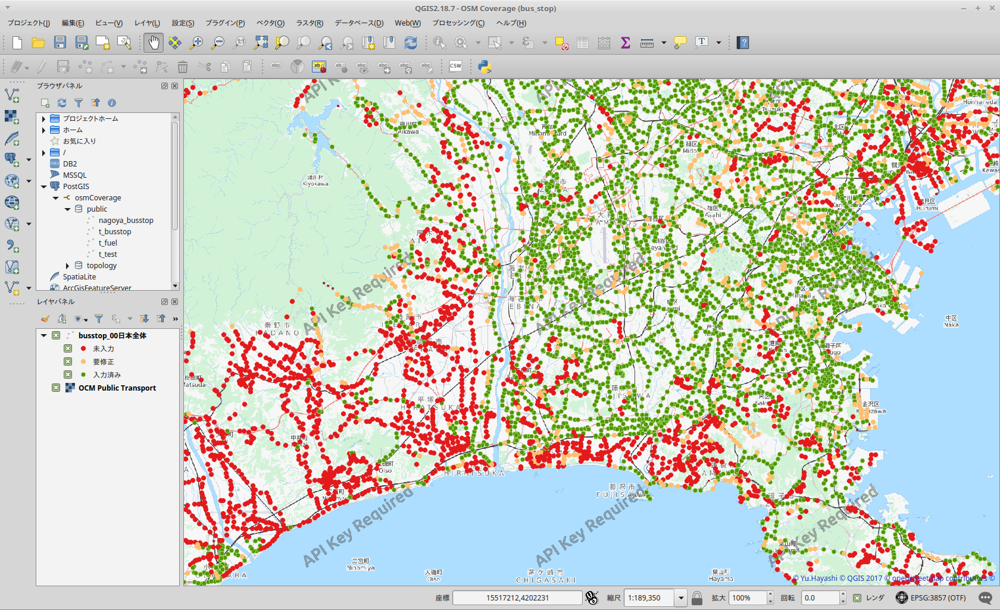

以下のデータは月に２〜３回程度の頻度で更新を行う予定です。
'QGIS’を使ってPostGISデータベースにあるデータを直接見ることで、GSの入力状況(入力済み／未入力)を詳細に知ることができます。マッピング計画の参考にしてください。
- QGISの設定定義ファイル[busstop_00_All.qgs]をダウンロード可能です。(for QGIS v2.14)
- 「QGISの使い方」説明書をダウンロード可能です。
国土数値情報のバス停位置を中心とする、300m以内に存在するOSMのバス停ノードの評価点の合計を数える。
また、nameが同一ならば600m以内にまでのノードも評価点に加える。
※ 2017-10-01 ポイントの集計方法を変更しました。以前からここのPostGISデータを利用しているかたはQGSファイルを更新してください。
評価点:
２個以上のバス停がある → 3ポイント
１個のバス停がある → 2ポイント
nameがない → 1ポイント
fixmeがある_→ 1ポイント
対象ノード:
node: [highway=bus_stop]
node: [highway=disused:bus_stop]
area: [amenity=bus_station]
node: [public_transport=platform] and [bus=yes]
node: [public_transport=stop_position] and [bus=yes]
レベル分け:
評価点の合計値をもとに以下に色分けしています。
0ポイント → ●(未入力）
1ポイント → ●(一次入力)
2ポイント → ●(入力済)
3ポイント → ●(入力済)
DEVELOP: SRCも公開. 自由にお使いください
このリポジトリ内のデータは、国土交通省国土政策局「[国土数値情報](http://nlftp.mlit.go.jp/ksj/)」をもとにhayashiが編集・加工したものです。

この 作品 は クリエイティブ・コモンズ 表示 - 非営利 4.0 国際 ライセンスの下に提供されています。